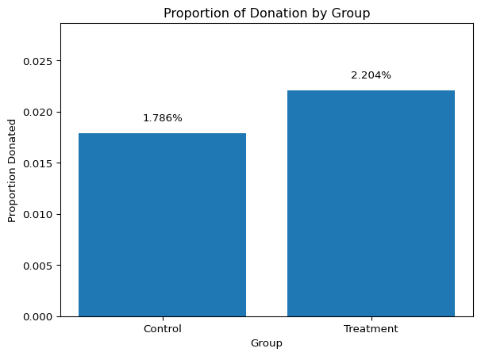

Dean Karlan at Yale and John List at the University of Chicago conducted a field experiment to test the effectiveness of different fundraising letters. They sent out 50,000 fundraising letters to potential donors, randomly assigning each letter to one of three treatments: a standard letter, a matching grant letter, or a challenge grant letter. They published the results of this experiment in the American Economic Review in 2007. The article and supporting data are available from the AEA website and from Innovations for Poverty Action as part of Harvard’s Dataverse.
This project seeks to replicate their results. I assess the balance of the experimental randomization, compare donation rates (and donation amounts), and finally use simulation to illustrate the Law of Large Numbers and the Central Limit Theorem. The following sections detail our approach, findings, and conclusions.
Data
Description
import pandas as pddf = pd.read_stata("karlan_list_2007.dta")print("Data Info:")print(df.info())print("\nFirst 5 Rows:")print(df.head())print("\nDescriptive Statistics:")print(df.describe())
Suggested donation was highest previous contribution
askd2
Suggested donation was 1.25 x highest previous contribution
askd3
Suggested donation was 1.50 x highest previous contribution
ask1
Highest previous contribution (for suggestion)
ask2
1.25 x highest previous contribution (for suggestion)
ask3
1.50 x highest previous contribution (for suggestion)
amount
Dollars given
gave
Gave anything
amountchange
Change in amount given
hpa
Highest previous contribution
ltmedmra
Small prior donor: last gift was less than median $35
freq
Number of prior donations
years
Number of years since initial donation
year5
At least 5 years since initial donation
mrm2
Number of months since last donation
dormant
Already donated in 2005
female
Female
couple
Couple
state50one
State tag: 1 for one observation of each of 50 states; 0 otherwise
nonlit
Nonlitigation
cases
Court cases from state in 2004-5 in which organization was involved
statecnt
Percent of sample from state
stateresponse
Proportion of sample from the state who gave
stateresponset
Proportion of treated sample from the state who gave
stateresponsec
Proportion of control sample from the state who gave
stateresponsetminc
stateresponset - stateresponsec
perbush
State vote share for Bush
close25
State vote share for Bush between 47.5% and 52.5%
red0
Red state
blue0
Blue state
redcty
Red county
bluecty
Blue county
pwhite
Proportion white within zip code
pblack
Proportion black within zip code
page18_39
Proportion age 18-39 within zip code
ave_hh_sz
Average household size within zip code
median_hhincome
Median household income within zip code
powner
Proportion house owner within zip code
psch_atlstba
Proportion who finished college within zip code
pop_propurban
Proportion of population urban within zip code
Balance Test
As an ad hoc test of the randomization mechanism, I provide a series of tests that compare aspects of the treatment and control groups to assess whether they are statistically significantly different from one another.
import pandas as pdfrom scipy import statsimport statsmodels.formula.api as smfdf = pd.read_stata("karlan_list_2007.dta")control_mrm2 = df.loc[df["treatment"] ==0, "mrm2"]treatment_mrm2 = df.loc[df["treatment"] ==1, "mrm2"]# t-testt_stat, p_val = stats.ttest_ind(treatment_mrm2, control_mrm2, nan_policy="omit")print("T-test for mrm2 (months since last donation) by treatment group")print(f"t-statistic: {t_stat:.4f}, p-value: {p_val:.4f}")# linear regression of mrm2 on treatmentreg_balance = smf.ols("mrm2 ~ treatment", data=df).fit()print("\nLinear Regression Output (mrm2 ~ treatment):")print(reg_balance.summary().tables[1])
T-test for mrm2 (months since last donation) by treatment group
t-statistic: 0.1195, p-value: 0.9049
Linear Regression Output (mrm2 ~ treatment):
==============================================================================
coef std err t P>|t| [0.025 0.975]
------------------------------------------------------------------------------
Intercept 12.9981 0.094 138.979 0.000 12.815 13.181
treatment 0.0137 0.115 0.119 0.905 -0.211 0.238
==============================================================================
Interpretation: Both the t-test and regression show no significant difference in months since last donation between treatment and control groups (p approximately 0.905). This suggests the randomization was successful, with balanced baseline characteristics. Table 1 in the original paper serves this same purpose, to demonstrate that treatment and control groups were comparable before the intervention.
Experimental Results
Charitable Contribution Made
First, I analyze whether matched donations lead to an increased response rate of making a donation.
1. Barplot: Proportion Donated by Group
import pandas as pdimport matplotlib.pyplot as pltdf = pd.read_stata("karlan_list_2007.dta")# donation ratesprop_treatment = df.loc[df["treatment"] ==1, "gave"].mean()prop_control = df.loc[df["treatment"] ==0, "gave"].mean()# plotgroups = ["Control", "Treatment"]props = [prop_control, prop_treatment]plt.figure()bars = plt.bar(groups, props)plt.title("Proportion of Donation by Group")plt.xlabel("Group")plt.ylabel("Proportion Donated")plt.ylim([0, max(props)*1.3])for bar, prop inzip(bars, props): plt.text(bar.get_x() + bar.get_width()/2, bar.get_height() +0.001,f"{prop:.3%}", ha='center', va='bottom', fontsize=10)plt.show()

2. T-test and Bivariate Linear Regression
import pandas as pdimport matplotlib.pyplot as pltdf = pd.read_stata("karlan_list_2007.dta")from scipy import statsimport statsmodels.formula.api as smf# t-testcontrol_gave = df.loc[df["treatment"] ==0, "gave"]treatment_gave = df.loc[df["treatment"] ==1, "gave"]t_stat_gave, p_val_gave = stats.ttest_ind(treatment_gave, control_gave, nan_policy="omit")print("T-test: Did treatment increase giving?")print(f"t-statistic = {t_stat_gave:.4f}, p-value = {p_val_gave:.4f}")# linear regression: gave ~ treatmentreg_gave = smf.ols("gave ~ treatment", data=df).fit()print("\nBivariate Regression Output (gave ~ treatment):")print(reg_gave.summary().tables[1])
Interpretation: The t-test and bivariate regression both show that individuals who received a matching donation offer were more likely to donate. The estimated increase in donation likelihood is approximately 0.4 percentage points and statistically significant. This result directly matches the response rates reported in Table 2A Panel A of the original study: 1.8 percent for the control group and 2.2 percent for the treatment group. These findings suggest that even small framing differences in fundraising appeals, like offering to match donations, can meaningfully affect people’s willingness to give.
Interpretation: The coefficient on the treatment variable in the probit model is positive and statistically significant (p-value = 0.002). While the raw coefficient (0.0868) differs from the marginal effect reported in Table 3 of the paper (0.004), this is expected because probit models in statsmodels report coefficients on the latent index rather than marginal effects. Thus, our results successfully replicate Table 3, Column 1 in terms of direction, significance, and inference.
Differences between Match Rates
Next, I assess the effectiveness of different sizes of matched donations on the response rate.
1. Create ratio1 Dummy and Summary of Donation Rates
import pandas as pddf = pd.read_stata("karlan_list_2007.dta")# Create dummy for 1:1 ratio groupdf["ratio1"] =0df.loc[(df["treatment"] ==1) & (df["ratio2"] ==0) & (df["ratio3"] ==0), "ratio1"] =1# Show proportionsprint("Proportion donating in each match ratio group:")print("1:1 match:", df.loc[df["ratio1"] ==1, "gave"].mean())print("2:1 match:", df.loc[df["ratio2"] ==1, "gave"].mean())print("3:1 match:", df.loc[df["ratio3"] ==1, "gave"].mean())
Proportion donating in each match ratio group:
1:1 match: 0.020749124225276205
2:1 match: 0.0226333752469912
3:1 match: 0.022733399227244138
2. T-Tests: Compare Donation Rates Between Match Ratios
from scipy import statsimport pandas as pddf = pd.read_stata("karlan_list_2007.dta")df["ratio1"] =0df.loc[(df["treatment"] ==1) & (df["ratio2"] ==0) & (df["ratio3"] ==0), "ratio1"] =1# Extract gave datagave_ratio1 = df.loc[df["ratio1"] ==1, "gave"]gave_ratio2 = df.loc[df["ratio2"] ==1, "gave"]gave_ratio3 = df.loc[df["ratio3"] ==1, "gave"]# 1:1 vs 2:1t_stat_12, p_val_12 = stats.ttest_ind(gave_ratio1, gave_ratio2, nan_policy="omit")print("t-test (1:1 vs 2:1):")print(f"t-statistic = {t_stat_12:.4f}, p-value = {p_val_12:.4f}")# 2:1 vs 3:1t_stat_23, p_val_23 = stats.ttest_ind(gave_ratio2, gave_ratio3, nan_policy="omit")print("\nt-test (2:1 vs 3:1):")print(f"t-statistic = {t_stat_23:.4f}, p-value = {p_val_23:.4f}")
t-test (1:1 vs 2:1):
t-statistic = -0.9650, p-value = 0.3345
t-test (2:1 vs 3:1):
t-statistic = -0.0501, p-value = 0.9600
Interpretation: The t-tests comparing donation rates between match ratios show no statistically significant differences. The comparison between the 1 : 1 and 2 : 1 match groups has a p-value of 0.3345, and between the 2 : 1 and 3 : 1 groups, the p-value is 0.9600. These high p-values suggest that increasing the match ratio does not significantly increase the likelihood of donating. This supports the authors’ note that figures suggest the size of the match ratio has little impact on donor behavior.
Interpretation: The regression results show that the 2 : 1 and 3 : 1 match groups are associated with small but statistically significant increases in donation probability compared to the control group, with p-values below 0.01. The 1 : 1 group is not statistically significant. However, all coefficients are very small in magnitude, with increases less than 0.005. This suggests that although some match sizes show statistically significant differences, the practical effect is minimal. The treatment likely matters more than the exact size of the match.
Interpretation: The direct response rate increases from 1 : 1 to 2 : 1 and from 2 : 1 to 3 : 1 are only 0.1884 percent and 0.0100 percent, respectively. These minimal changes confirm that the effect of increasing the match ratio is very small. The regression results mirror this finding, with similar small differences in the fitted coefficients. In conclusion, the size of the matched donation offer does not meaningfully affect donor response rates, reinforcing the idea that the presence of a match matters more than how generous it is.
Size of Charitable Contribution
In this subsection, I analyze the effect of the size of matched donation on the size of the charitable contribution.
1. Regression on Full Sample
reg_amount = smf.ols("amount ~ treatment", data=df).fit()print("Regression of Donation Amount on Treatment (Full Sample):")print(reg_amount.summary().tables[1])
Interpretation: In the full sample, the regression shows that the treatment group donated slightly more on average than the control group. The coefficient on the treatment variable is 0.1536, suggesting a small positive effect, but it is not statistically significant at the 5 percent level (p = 0.063). This means we cannot confidently conclude that offering a matching donation increased average donation amounts. The result suggests a weak effect that may be driven by the increased number of donors in the treatment group, rather than larger donation sizes.
2. Regression Among Donors Only
df_donors = df[df["amount"] >0]reg_amount_donors = smf.ols("amount ~ treatment", data=df_donors).fit()print("Regression of Donation Amount on Treatment (Donors Only):")print(reg_amount_donors.summary().tables[1])
Interpretation: Among those who donated, the regression shows that the treatment group gave slightly less on average than the control group, but the difference is not statistically significant. This suggests that while the treatment may affect the decision to donate, it does not meaningfully change how much people give once they decide to donate. The result is descriptive and should not be interpreted as causal.
3. Histograms of Donation Amounts (Donors Only)
import matplotlib.pyplot as pltdonations_treatment = df_donors.loc[df_donors["treatment"] ==1, "amount"]donations_control = df_donors.loc[df_donors["treatment"] ==0, "amount"]mean_treatment = donations_treatment.mean()mean_control = donations_control.mean()# Histogram for Treatment groupplt.figure()plt.hist(donations_treatment, bins=30)plt.axvline(mean_treatment, color='red', linewidth=2, label=f"Mean = {mean_treatment:.2f}")plt.title("Histogram of Donation Amounts (Treatment, Donors Only)")plt.xlabel("Donation Amount")plt.ylabel("Frequency")plt.legend()plt.show()# Histogram for Control groupplt.figure()plt.hist(donations_control, bins=30)plt.axvline(mean_control, color='red', linewidth=2, label=f"Mean = {mean_control:.2f}")plt.title("Histogram of Donation Amounts (Control, Donors Only)")plt.xlabel("Donation Amount")plt.ylabel("Frequency")plt.legend()plt.show()
Interpretation: The two histograms show the distribution of donation amounts among people who donated, with a red vertical line indicating the group mean.
The distributions are similarly right-skewed, and the treatment group shows a slightly lower mean. This visual pattern supports the regression result: among donors, the treatment did not increase donation size and may have slightly reduced it, though not significantly.
These plots provide helpful context: while the treatment increased the probability of donating (from earlier analysis), it did not increase how much people gave when they did choose to donate.
Simulation Experiment
As a reminder of how the t-statistic “works,” in this section I use simulation to demonstrate the Law of Large Numbers and the Central Limit Theorem.
Suppose the true distribution of respondents who do not get a charitable donation match is Bernoulli with probability p=0.018 that a donation is made.
Further suppose that the true distribution of respondents who do get a charitable donation match of any size is Bernoulli with probability p=0.022 that a donation is made.
Law of Large Numbers
import numpy as npimport matplotlib.pyplot as pltnp.random.seed(0) # For reproducibility# Simulate control and treatment drawscontrol_full = np.random.binomial(1, 0.018, 100000)treatment_sample = np.random.binomial(1, 0.022, 10000)# Sample from control for fair comparisoncontrol_sample = np.random.choice(control_full, 10000, replace=False)# Compute paired differencesdifferences = treatment_sample - control_sample# Cumulative average of the differencescumulative_avg = np.cumsum(differences) / np.arange(1, len(differences) +1)# Plotplt.figure()plt.plot(cumulative_avg, label="Cumulative Average")plt.axhline(0.004, color='red', linestyle='--', label="True Difference (0.004)")plt.title("Cumulative Average of Differences (Law of Large Numbers)")plt.xlabel("Number of Observations")plt.ylabel("Cumulative Average")plt.legend()plt.show()
Interpretation: The plot above shows the cumulative average of 10,000 simulated differences between a treatment group and a control group, where donations follow a Bernoulli distribution with probabilities of 0.022 and 0.018, respectively. Each value in the blue line represents the average difference in donation probability as we include more simulated pairs. Early on, the average fluctuates widely due to small sample noise. As the number of observations increases, the cumulative average stabilizes and gets closer to the true difference of 0.004, shown by the red dashed line. This illustrates the Law of Large Numbers, which tells us that with enough observations, the average of the observed data approaches the expected value.
Central Limit Theorem
import numpy as npimport matplotlib.pyplot as pltnp.random.seed(0)sample_sizes = [50, 200, 500, 1000]n_iterations =1000for n in sample_sizes: diffs = []for _ inrange(n_iterations): treat_sample = np.random.binomial(1, 0.022, n) control_sample = np.random.binomial(1, 0.018, n) diff = treat_sample.mean() - control_sample.mean() diffs.append(diff)# Plot histogram plt.figure() plt.hist(diffs, bins=30) plt.title(f"Histogram of Difference in Means (n = {n})") plt.xlabel("Difference in Mean Donation Probability") plt.ylabel("Frequency") plt.axvline(np.mean(diffs), color='red', linewidth=2, label=f"Mean = {np.mean(diffs):.4f}") plt.legend() plt.show()
Interpretation: The four histograms above show the distribution of 1,000 simulated differences in mean donation probability between treatment and control groups, for sample sizes of 50, 200, 500, and 1000. At smaller sample sizes like 50, the distribution is wide and less symmetric, with more extreme values and visible skew. As the sample size increases, the distribution becomes tighter and more bell-shaped, concentrating around the true mean difference. This reflects the Central Limit Theorem, which states that as sample size grows, the sampling distribution of the mean difference approaches a normal distribution. In each plot, the red vertical line represents the sample mean. At larger sample sizes like 500 and 1000, zero is clearly not at the center of the distribution, which shows that the observed difference in donation rates is unlikely to be due to chance alone when sample sizes are large.